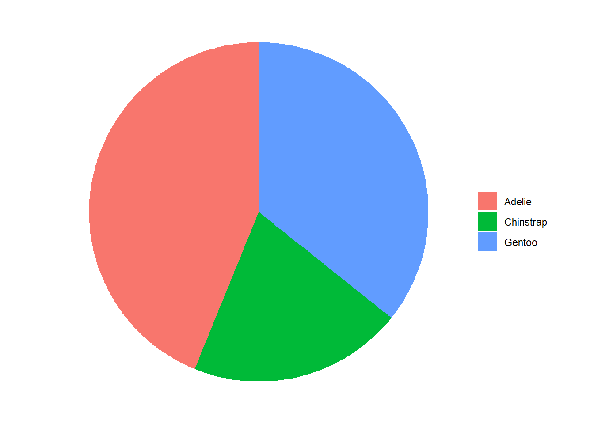

# A tibble: 10 × 8
species island bill_length_mm bill_depth_mm flipper_length_mm body_mass_g
<fct> <fct> <dbl> <dbl> <int> <int>
1 Adelie Torgersen 39.1 18.7 181 3750
2 Adelie Torgersen 39.5 17.4 186 3800
3 Adelie Torgersen 40.3 18 195 3250
4 Adelie Torgersen NA NA NA NA
5 Adelie Torgersen 36.7 19.3 193 3450
6 Adelie Torgersen 39.3 20.6 190 3650
7 Adelie Torgersen 38.9 17.8 181 3625
8 Adelie Torgersen 39.2 19.6 195 4675
9 Adelie Torgersen 34.1 18.1 193 3475
10 Adelie Torgersen 42 20.2 190 4250
# ℹ 2 more variables: sex <fct>, year <int>
Veamos su estructura:
str(penguins)
tibble [344 × 8] (S3: tbl_df/tbl/data.frame)
$ species : Factor w/ 3 levels "Adelie","Chinstrap",..: 1 1 1 1 1 1 1 1 1 1 ...
$ island : Factor w/ 3 levels "Biscoe","Dream",..: 3 3 3 3 3 3 3 3 3 3 ...
$ bill_length_mm : num [1:344] 39.1 39.5 40.3 NA 36.7 39.3 38.9 39.2 34.1 42 ...
$ bill_depth_mm : num [1:344] 18.7 17.4 18 NA 19.3 20.6 17.8 19.6 18.1 20.2 ...
$ flipper_length_mm: int [1:344] 181 186 195 NA 193 190 181 195 193 190 ...
$ body_mass_g : int [1:344] 3750 3800 3250 NA 3450 3650 3625 4675 3475 4250 ...
$ sex : Factor w/ 2 levels "female","male": 2 1 1 NA 1 2 1 2 NA NA ...
$ year : int [1:344] 2007 2007 2007 2007 2007 2007 2007 2007 2007 2007 ...
Como podemos observar, el tamaño de la muestra realizada es de 344 pingüinos, de los que se han tomado datos de 8 variables diferentes. Entre estas encontramos tres variables de tipo factor: Species, que puede tomar tres valores (“Adelie”, “Chinstrap”, “Gentoo”); la variable Island asigna la isla de procedencia de cada individuo y toma tres valores también, que son “Biscoe”, “Dream” y “Torgersen”; finalmente los niveles de la variable sex son “female” y “male”.
También encontramos dos variables del tipo numérico, que son bill_length_mm, que corresponde a la longitud del pico de cada pingüino, en milímetros , y bill_depth_mm, que corresponde al grosor del pico, también en milímetros.
Finalmente, tenemos tres últimas variables de tipo integer: flipper_length_mm, que corresponde a la longitud de las aletas de cada pingüino, en milímetros; body_mass_g, que recoge la masa corporal en gramos de cada individuo; year, que se atubuye al año de estudio de cada pingüino (2007, 2008 o 2009).
Observamos también que hay valores NA y, por lo tanto vamos a eliminar los sujetos que presenten estos valores. Guardamos el nuevo dataframe porque trabajaremos con él a partir de ahora.
pinguinos =na.omit(penguins)
Una vez hemos limpiado los datos, empezamos con el análisis descriptivo.
Datos demográficos
Empecemos por las frecuencias relativas de cada especie de pingüino:
table(pinguinos$species)
Adelie Chinstrap Gentoo
146 68 119
Con cierta diferencia, la especie más poblada es la Adelie, seguida de Gentoo y, finalmente, Chinstrap, que es la menos poblada. Veámoslo gráficamente:
library(ggplot2)data =data.frame(group =c("Adelie", "Gentoo", "Chinstrap"), value =c(146, 119, 68))ggplot(data, aes(x ="", y = value, fill = group)) +geom_col() +coord_polar(theta ="y") +theme_void() +guides(fill=guide_legend(title =""))

También es interesante estudiar la población por islas. A continuación lo vemos:
table(pinguinos$island)
Biscoe Dream Torgersen
163 123 47
Como podemos ver, la isla más poblada es la Biscoe, seguida de Dream y, por último, ya más alejada en cuanto a valores, la isla Torgersen. Analicemos ahora la población de cada isla por especies; es decir, nos interesa saber la cantidad de pingüinos de cada especie en cada isla. Para ello utilizamos:
Vamos a analizar las diferentes característcas de cada especie. En primer lugar, estudiaremos la media de las caracerísticas de los pingüinos. Lo haremos con la función aggregate() donde definiremos las características como vector y lo relacionaremos con las diferentes especies de nuestro dataframe.
Como podemos observar, la especie Chinstrap es la que tiene el pico más largo y ancho en comparación a las medias de las otras dos especies. En cambio, la especie Gentoo tiene las aletas más largas que las otras dos especies que están bastante cerca en realción a la media. Y, por último, la especie Gentoo tiene el peso medio considerablemente más alto que las demás que són bastante próximas numéricamente.
Ahora bien, vamos a estudiar cada especie por separado. Empezaremos estudiando la especie Adelie que es la más abundante. Vamos a estudiar la media de sus características en relación a la isla que habitan para ver si hay diferencias significativas entre habitar una isla u otra.
Podemos observar que las medias de la largaria y anchura del pico son próximas numericamente. En cambio, las aletas de los pingüinos Adelie de la isla Torgersen són un poco más largas que las de las otras islas. Sobre el peso podemos decir que las medias son bastante cercanas, así que no podemos observar diferencias significativas entre el peso de los pingüinos Adelie en referencia a habitar una isla u otra.
Notemos que con las especies Chinstrap y Gentoo no podemos hacer el estudio de las diferentes islas ya que sólo habitan una: la especie Chinstrap habita en Dream y la Gentoo en Biscoe.
Resumen especies
Vamos a ver de manera resumida los daros recogidos anteriormente:
summary(pinguinos)
species island bill_length_mm bill_depth_mm
Adelie :146 Biscoe :163 Min. :32.10 Min. :13.10
Chinstrap: 68 Dream :123 1st Qu.:39.50 1st Qu.:15.60
Gentoo :119 Torgersen: 47 Median :44.50 Median :17.30
Mean :43.99 Mean :17.16
3rd Qu.:48.60 3rd Qu.:18.70
Max. :59.60 Max. :21.50
flipper_length_mm body_mass_g sex year
Min. :172 Min. :2700 female:165 Min. :2007
1st Qu.:190 1st Qu.:3550 male :168 1st Qu.:2007
Median :197 Median :4050 Median :2008
Mean :201 Mean :4207 Mean :2008
3rd Qu.:213 3rd Qu.:4775 3rd Qu.:2009
Max. :231 Max. :6300 Max. :2009